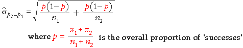

Hypothesis test
A test for equal proportions in two groups follows similar steps to the test for whether the means in two groups are the same.
Alternative test statistic
Most statisticians prefer to use a different formula for the standard deviation in the evaluation of the z-value above. Since π1 and π2 are equal if H0 is true, the overall proportion of successes, p, can be used in the formula for the standard deviation of p2 - p1.

This refinement makes little difference in practice, so the examples below use the 'simpler' formula that we gave earlier.
Examples